The integration of Battery Energy Storage Systems (BESS) with Electric Vehicle (EV) charging infrastructure represents a critical advancement in sustainable transportation and grid modernization. As the EV market continues its exponential growth, charging station operators and developers face a fundamental architectural decision: whether to implement AC-coupled or DC-coupled systems for their BESS integration. This choice significantly impacts system efficiency, cost, reliability, and scalability.
Understanding the Fundamental Difference
AC-coupled systems connect the BESS to the alternating current (AC) side of the power system. In this configuration, both the solar panels (if present) and the battery energy storage system operate with their own dedicated inverters. The battery system requires its own battery inverter that converts DC power from the batteries to AC power and vice versa.
DC-coupled systems integrate the BESS on the direct current (DC) side of the power system, typically sharing a common DC bus with other DC sources like solar panels. These systems use a single hybrid inverter/charger that converts the combined DC power from solar panels and/or batteries into AC power for the grid or facility.
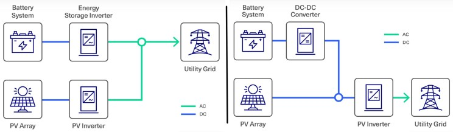
Technical Architecture and Power Flow
AC-Coupled Architecture
In AC-coupled EV charging systems with BESS, power flows through multiple conversion stages:
- Charging Process: AC power from the grid → Solar inverter (if applicable) → AC bus → Battery inverter → DC power to battery storage.
- Discharging Process: DC power from battery → Battery inverter → AC power → EV charging station or grid export.
- Total Conversions: Energy stored in batteries undergoes three inversions (DC-AC, AC-DC, and DC-AC) before reaching the EV.
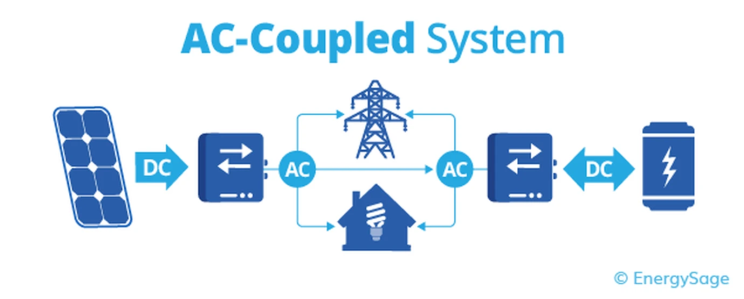
DC-Coupled Architecture
DC-coupled systems provide a more direct power path:
- Charging Process: DC power from solar panels → DC bus → Battery storage (direct connection).
- Discharging Process: DC power from battery → Hybrid inverter → AC power for EV charging or grid export.
- Total Conversions: Energy requires only one conversion (DC to AC) when flowing from battery storage to AC loads.
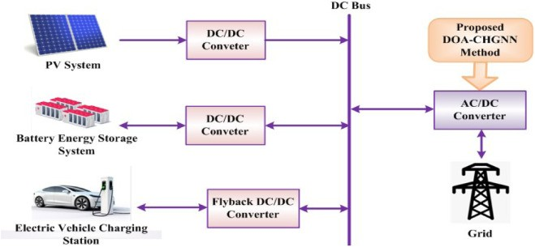
Efficiency Comparison
DC-coupled systems demonstrate superior efficiency in energy storage and retrieval scenarios. When charging directly from solar sources, DC-coupled systems achieve 95-98% efficiency through single-stage DC-DC conversion. However, when charging from the grid, efficiency drops to approximately 87% due to additional AC-DC conversion requirements.
AC-coupled systems exhibit lower overall efficiency due to multiple power conversions. The round-trip efficiency typically ranges from 90-94%, with energy losses of 6-8% occurring during the multiple conversion stages. These efficiency losses translate to higher operational costs over the system's lifetime.
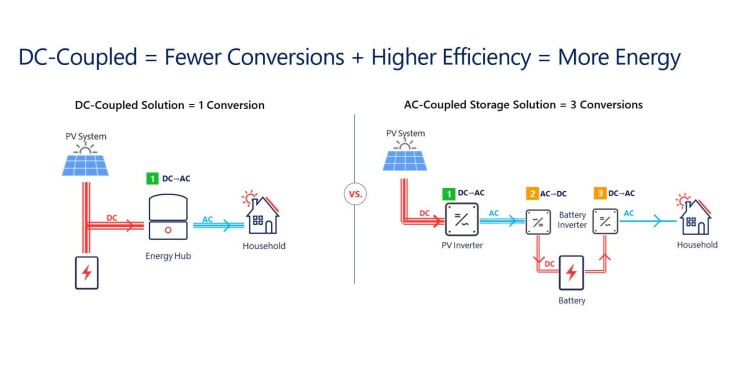
Cost Analysis
Initial Capital Expenditure
DC-coupled systems generally offer lower initial equipment costs since they require only one hybrid inverter instead of separate inverters for solar and battery systems. This reduction in component count leads to simplified system architecture and reduced installation complexity.
AC-coupled systems involve higher equipment costs due to the need for separate inverters for each energy source. However, this higher initial cost is offset by greater modularity and flexibility in system design.
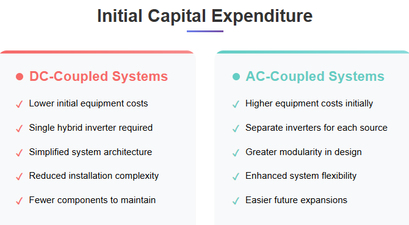
Operational Costs
The 4-8% efficiency difference between coupling methods creates significant operational cost implications. For a 10kWh daily cycling system, this efficiency gap accumulates to substantial energy losses and associated costs over the system's 15-20 year lifespan.
Infrastructure and maintenance costs also differ significantly. DC-coupled systems require specialized high-voltage DC components and more complex thermal management due to higher currents and voltages on the shared DC bus. AC-coupled systems distribute heat generation across multiple smaller inverters, potentially reducing cooling requirements.
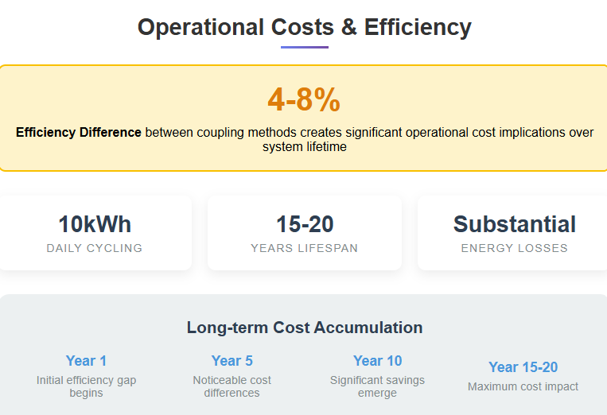
EV Charging Specific Considerations
Charging Speed and Power Delivery
For EV fast-charging applications, DC-coupled systems provide advantages in power delivery efficiency. The direct DC connection enables more efficient power transfer from battery storage to DC fast chargers, reducing conversion losses during high-power charging events.
AC charging applications (Level 1 and Level 2) may benefit more from AC-coupled systems' flexibility, as these charging scenarios typically occur over longer periods where the efficiency advantage of DC coupling is less critical.
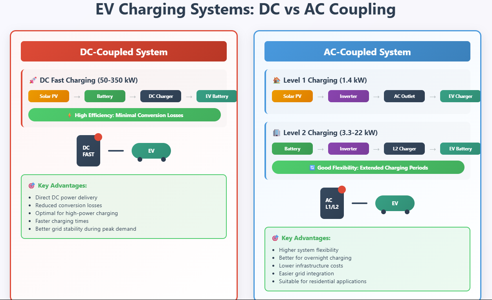
Grid Integration and Demand Management
Both coupling configurations support critical EV charging applications:
Peak Shaving: BESS helps manage peak demand charges by supplying stored energy during high-demand periods. DC-coupled systems provide more efficient peak shaving due to reduced conversion losses.
Load Balancing: Smart energy management systems can distribute charging loads across multiple EVs while maintaining grid stability. AC-coupled systems offer more flexibility in managing multiple charging points independently.
Vehicle-to-Grid (V2G) Integration: Bidirectional charging requires sophisticated power conversion capabilities. AC-coupled systems may provide better compatibility with existing V2G infrastructure, while DC-coupled systems offer higher efficiency for bidirectional power flow.
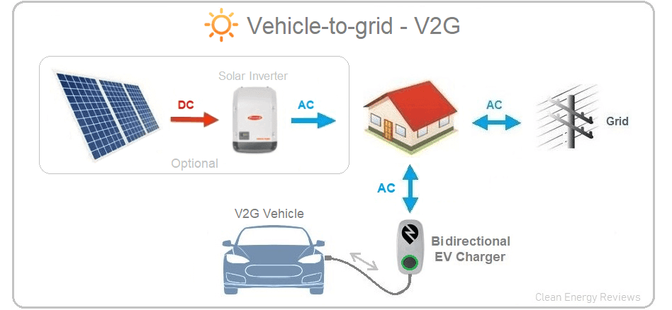
Reliability and Maintenance
System Reliability
AC-coupled systems offer superior reliability through redundancy. If one inverter fails, other components continue operating independently, avoiding complete system shutdown. This distributed approach eliminates single points of failure that can affect the entire charging operation.
DC-coupled systems present reliability challenges due to their centralized architecture. Failure of the hybrid inverter affects both solar generation and battery storage capabilities. However, studies indicate that with proper redundancy design, DC-coupled systems can achieve comparable reliability to AC-coupled configurations.
Maintenance Requirements
DC-coupled systems require specialized maintenance expertise for high-voltage DC components. The shared DC bus necessitates careful attention to voltage compatibility and system integration during maintenance activities.
AC-coupled systems benefit from standardized AC equipment maintenance procedures and wider availability of qualified technicians. Component replacement is typically easier due to the modular nature of the system architecture.
Grid Stability and Frequency Response
Frequency Regulation Services
Battery energy storage systems integrated with EV charging can provide valuable ancillary services to the grid. AC-coupled systems may offer advantages in fast frequency response applications due to independent inverter control and the ability to participate in grid services without affecting charging operations.
DC-coupled systems can provide efficient frequency regulation services, but the shared inverter architecture may limit simultaneous grid services and EV charging operations.
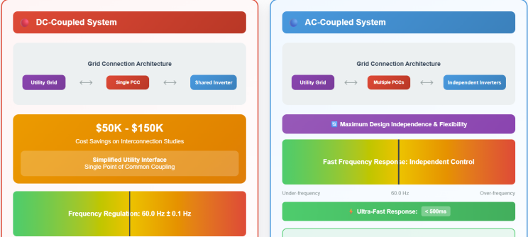
Grid Integration Complexity
Grid interconnection requirements significantly favor DC-coupled systems through simplified utility interfaces via a single point of common coupling. This reduces interconnection study costs by $50,000-150,000 compared to systems requiring multiple connection points.
AC-coupled systems maintain design independence, allowing storage additions or modifications without affecting existing solar or charging infrastructure. This flexibility becomes valuable as regulatory requirements evolve and system expansion needs arise.
Scalability and Future-Proofing
System Expansion
AC-coupled systems excel in scalability due to their modular architecture. Additional battery capacity or charging infrastructure can be added incrementally without major system redesign. This modularity makes AC-coupled systems particularly attractive for commercial and fleet charging applications with evolving capacity requirements.
DC-coupled systems face scalability challenges due to DC bus voltage limitations and the need for voltage compatibility across all connected components. However, when properly designed from the outset, DC-coupled systems can accommodate significant expansion within their design parameters.
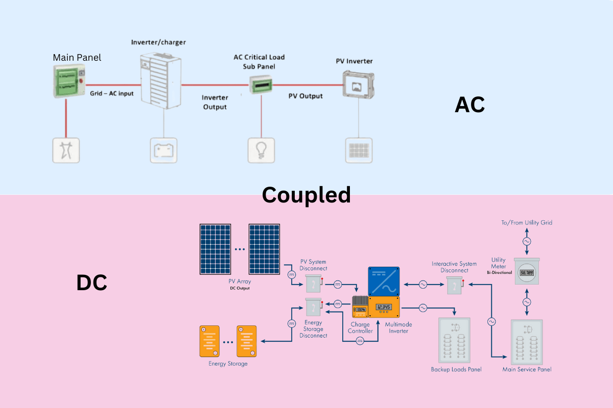
Technology Evolution
As EV charging technology advances toward higher power levels and improved efficiency, DC-coupled systems may be better positioned to integrate next-generation charging technologies due to their native DC architecture alignment with EV battery systems.
AC-coupled systems provide greater flexibility for integrating diverse charging technologies and standards, making them more adaptable to evolving market requirements.
Application-Specific Recommendations
New Installations
For greenfield EV charging facilities with BESS, DC-coupled systems offer compelling advantages in efficiency and cost-effectiveness. The ability to optimize the entire system architecture from the ground up maximizes the benefits of DC coupling while minimizing its limitations.
Retrofit Applications
Existing EV charging facilities seeking to add battery storage should strongly consider AC-coupled systems. The retrofit flexibility and compatibility with existing AC infrastructure make AC coupling the preferred choice for most upgrade scenarios.
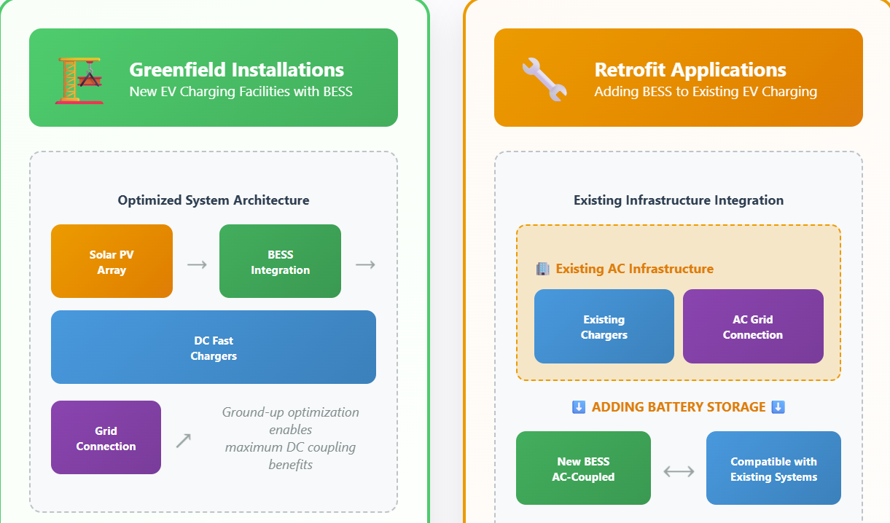
High-Utilization Fleet Applications
Commercial fleet charging operations requiring maximum efficiency and minimum downtime may benefit from DC-coupled systems' superior round-trip efficiency. However, the reliability advantages of AC-coupled systems must be carefully weighed against efficiency gains.
Grid-Constrained Locations
For charging facilities in areas with limited grid capacity, DC-coupled systems' higher efficiency can provide more usable energy from the same battery investment. This efficiency advantage becomes particularly valuable in locations where grid upgrade costs are prohibitive.
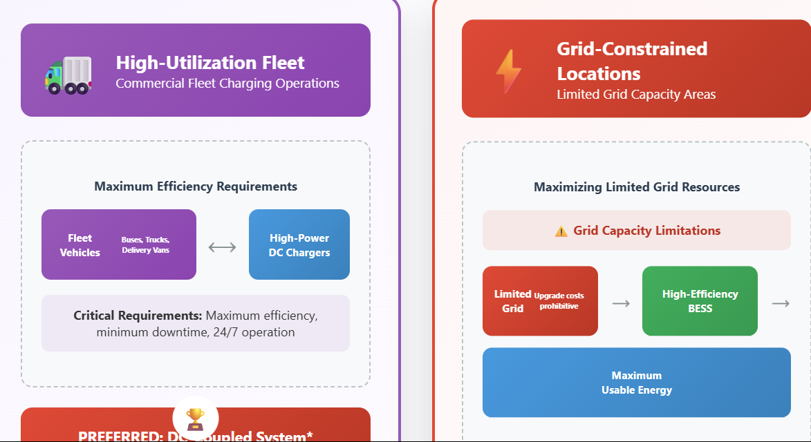
Future Trends and Developments
The evolution toward hybrid AC/DC systems represents an emerging trend that combines the advantages of both coupling methods. These systems can optimize energy flow based on real-time conditions, using DC coupling for high-efficiency storage and AC coupling for flexible grid interaction.
Standardization efforts in V2G technology (ISO 15118-20) are developing protocols that support both AC and DC bidirectional charging. This standardization may influence future coupling decisions as V2G becomes more prevalent in commercial applications.
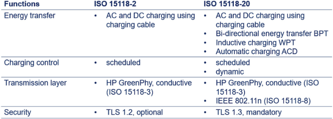
Conclusion
The choice between AC-coupled and DC-coupled BESS for EV charging applications requires careful consideration of multiple factors including system efficiency, cost, reliability, and operational requirements. DC-coupled systems excel in efficiency and cost-effectiveness for new installations with well-defined operational profiles, achieving 4-8% higher round-trip efficiency and lower equipment costs.
AC-coupled systems provide superior flexibility, reliability, and scalability, making them ideal for retrofit applications and installations requiring high reliability or frequent system modifications. The modular architecture eliminates single points of failure while enabling independent optimization of charging and storage operations.